Ilustración
Ilustración ¡Hechale un vistazo a mis ilustraciones!
Te muestro algunas de las diferentes técnicas en la ilustración que he realizado.
Lápiz de grafito y cera
La técnica del grafito es una de las queridas por ocupar solo una goma y un lápiz para dibujar como contrario un lápiz de cera es un poco más dificil de manejar pero no imposible, aqui te muestro algunos ejemplos.
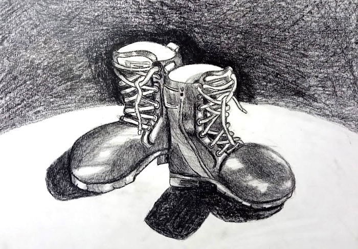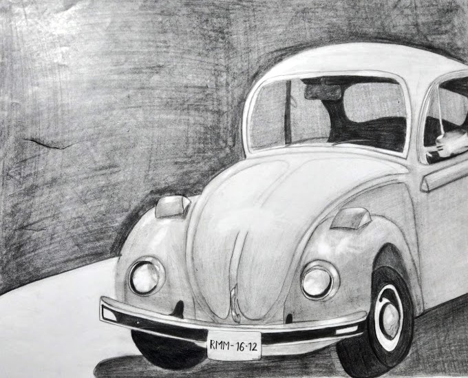Lápiz de color
El lápiz de color es una técnica que nos permite tener mezclar los colores haciendo un degradado entre diferentes tonos lo que la hace una técnica muy flexible. Aquí te muestro algunas ilustraciones con esta técnica.
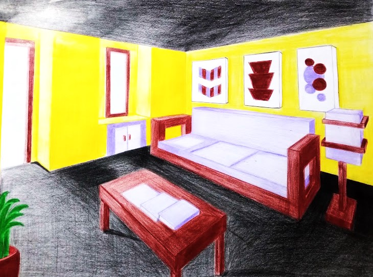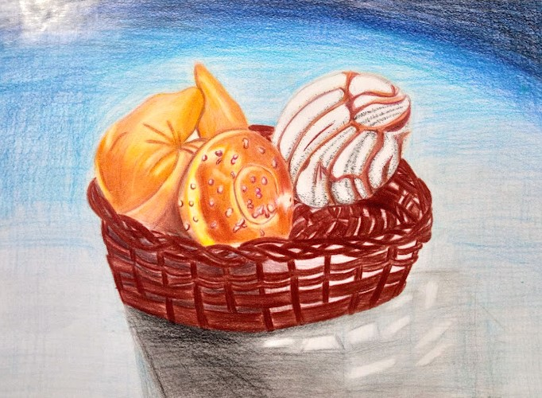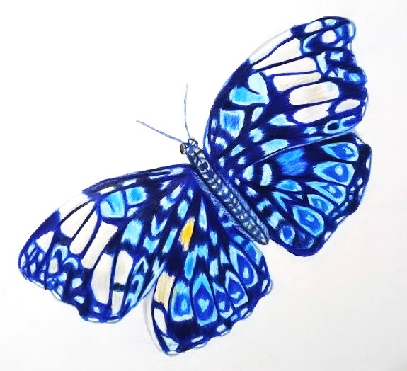Acuarela
Usar agua con pigmento es una de las técnicas más versátiles, el experimentar con un agente ajeno es una gran combinación.
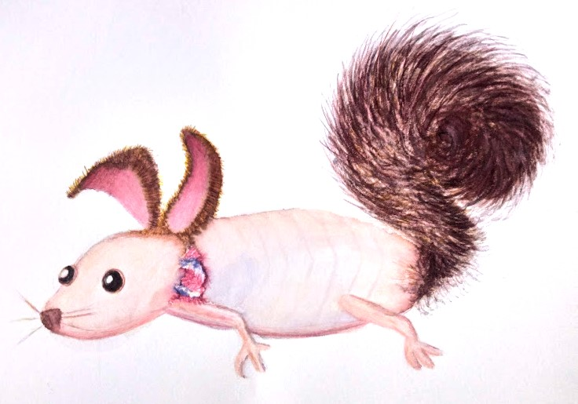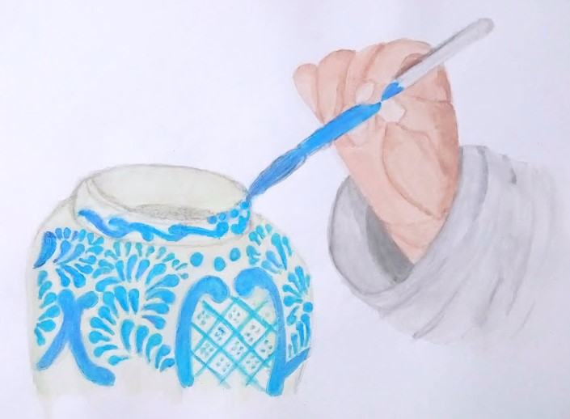Acrílico
Amor y odio a esta técnica, tiene una gran pigmentación pero si lo dejas secar ya no puedes mezclar colores.
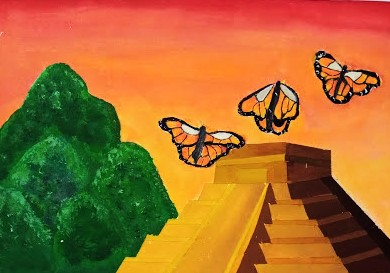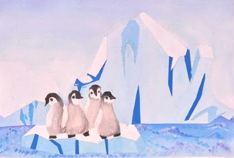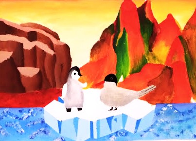Aerografía
Así es, se puede ilustrar con un aerográfo y acuarela, es una técnica díficil que necesita de mucha paciencia.
 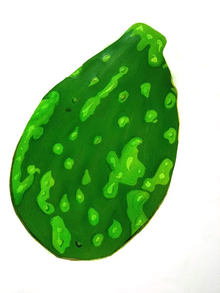
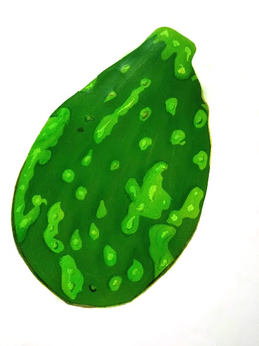